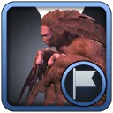

Talent
Deep Offering
Deep Offering is a level 6 talent of Vey the Pactbinder.
Deep Offering is a talent of Vey the Pactbinder, offered at player level 6 to the Thrall Binder and Golem Caller builds.
Description
Blood Offering heals 50% more and its blessing lasts 8 seconds.
What it changes
Blood Offering becomes Deep Offering.
- The change takes effect from the next fight, and the upgraded form keeps the original's place in the casting order.
- The ability stops with the commander: if the commander falls, it is not cast again in that fight.
- A talent is kept for the rest of the match.
Ability
| Ability | Timing | Description | |
|---|---|---|---|
| Before the talent |  Blood Offering Blood Offering | Cooldown 8 seconds | Vey spends 5% of her maximum health to heal every ally at once and grant them health regeneration and attack damage for 6 seconds. |
| With the talent |  Deep Offering Deep Offering | Cooldown 8 seconds | Vey spends 5% of her maximum health to heal every ally for 50% more and grant them health regeneration and attack damage for 8 seconds. |
Before and after
Everything that differs between the two forms. Anything not listed is the same in both.
| What changes | Blood Offering (original) | Deep Offering (upgraded) |
|---|---|---|
| Instant heal to each ally | Levels 1 to 5: 61 Level 6: 75 Level 7: 90 Level 8: 135 Level 9: 150 Level 10: 180 | Levels 1 to 5: 91.5 Level 6: 112.5 Level 7: 135 Level 8: 202.5 Level 9: 225 Level 10: 270 |
| Blood Offering on allies: duration (s) | 6 | 8 |
The choice
At each talent level you are shown the options for your build and keep one. Taking Deep Offering means giving up the other option of that level for the rest of the match.
| Build | Player level | Competes with | The alternative |
|---|---|---|---|
| Thrall Binder and Golem Caller | 6 |  Infernal Boost | Every ally deals 8% more damage. |
The full ladders are on the talents page; the rules are on How commanders work.